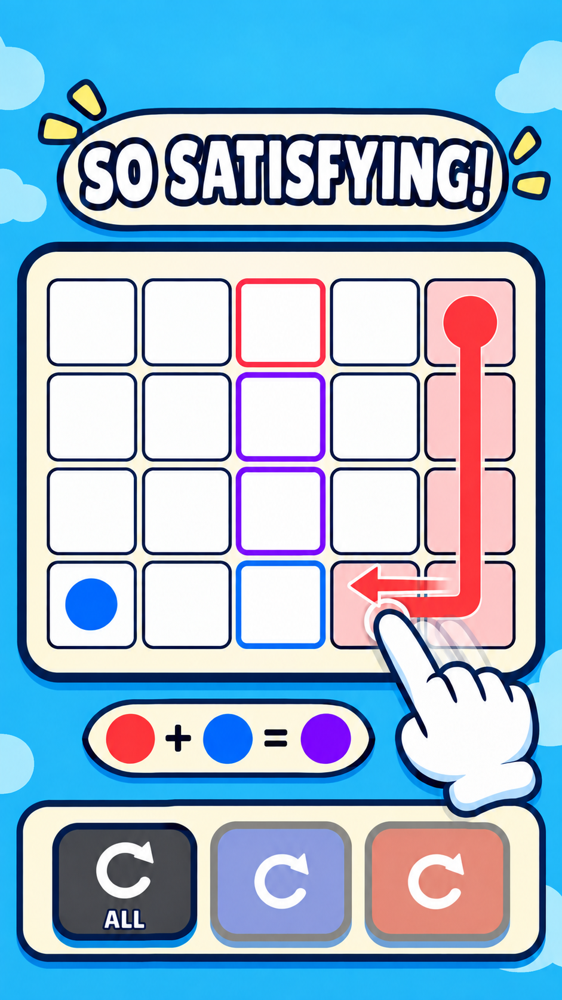
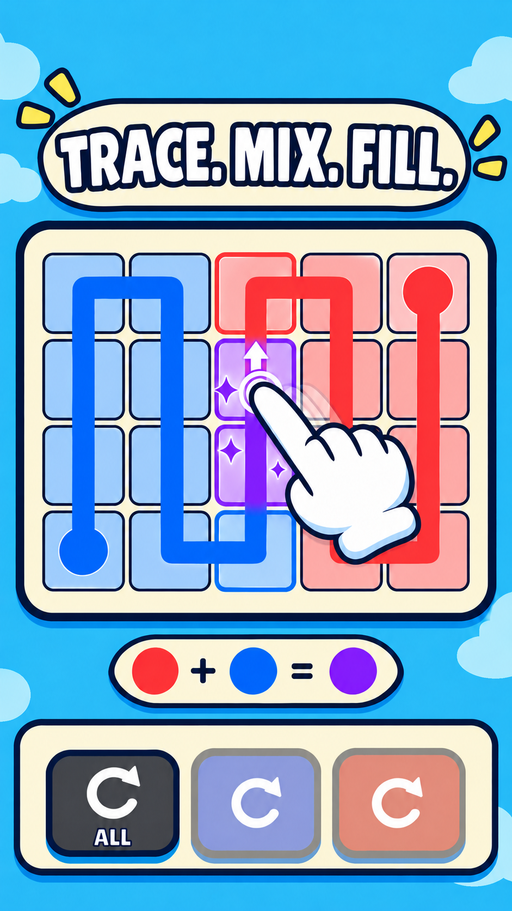
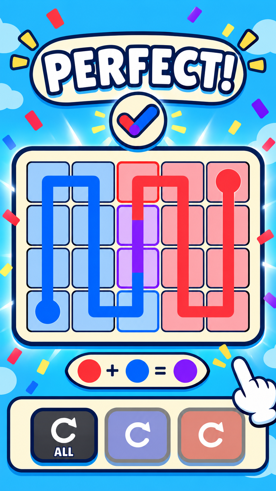
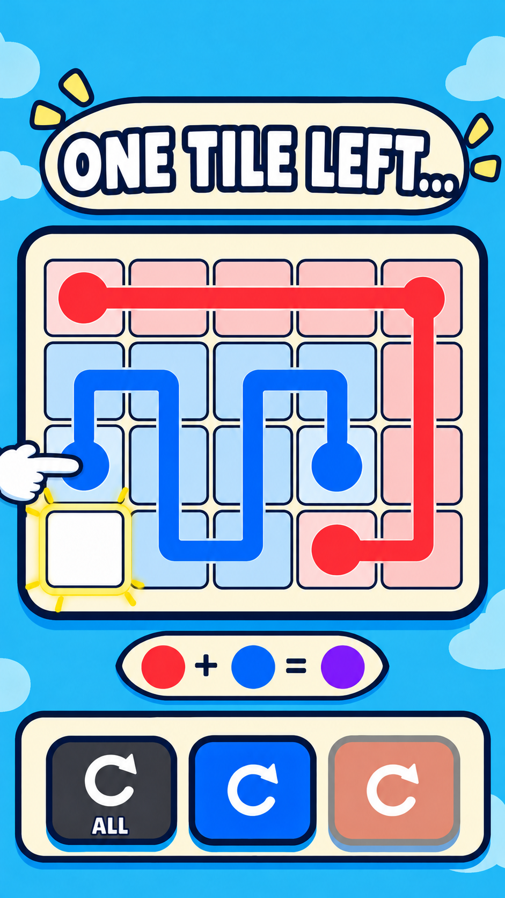
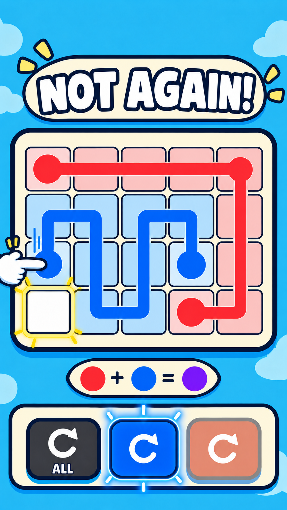
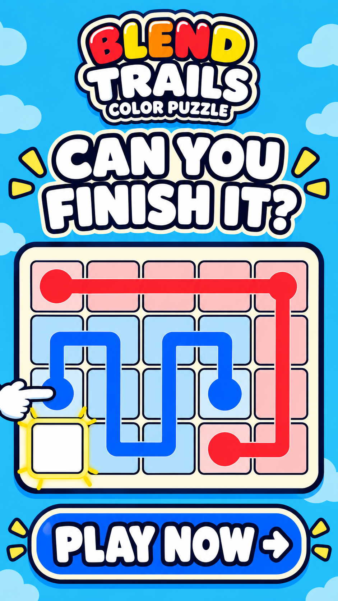

ONE TILE LEFT — あと1マスなのに
36秒・縦長9:16・5列×4行。各画像を押すとPNGを開きます。白い手・指先の接触リング・短い軌跡でスワイプを示します。後半の白マスは左下に統一。

01 / 0–3秒 — SO SATISFYING!赤のスワイプ開始。指先の光と左向きの矢印で移動を示す。

02 / 3–12秒 — TRACE. MIX. FILL.青を重ねて指定マスを紫に混色。上向きのスワイプを示す。

03 / 12–16秒 — PERFECT!20マスすべて正解。盤面の弾み、光、紙吹雪。

04 / 16–26秒 — ONE TILE LEFT...左下の白マスだけが残り、その1つ上で指が止まる。

05 / 26–33秒 — NOT AGAIN!青だけリセットして引き直すが、同じ左下を塗り忘れる。

06 / 33–36秒 — CAN YOU FINISH IT? / PLAY NOW白マスと盤面を残したまま、ロゴ・問いかけ・PLAY NOW。